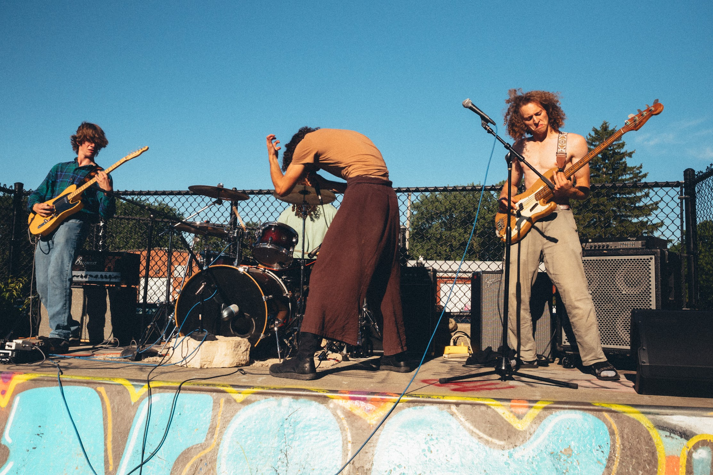
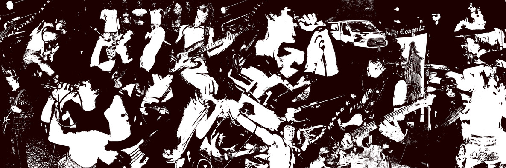
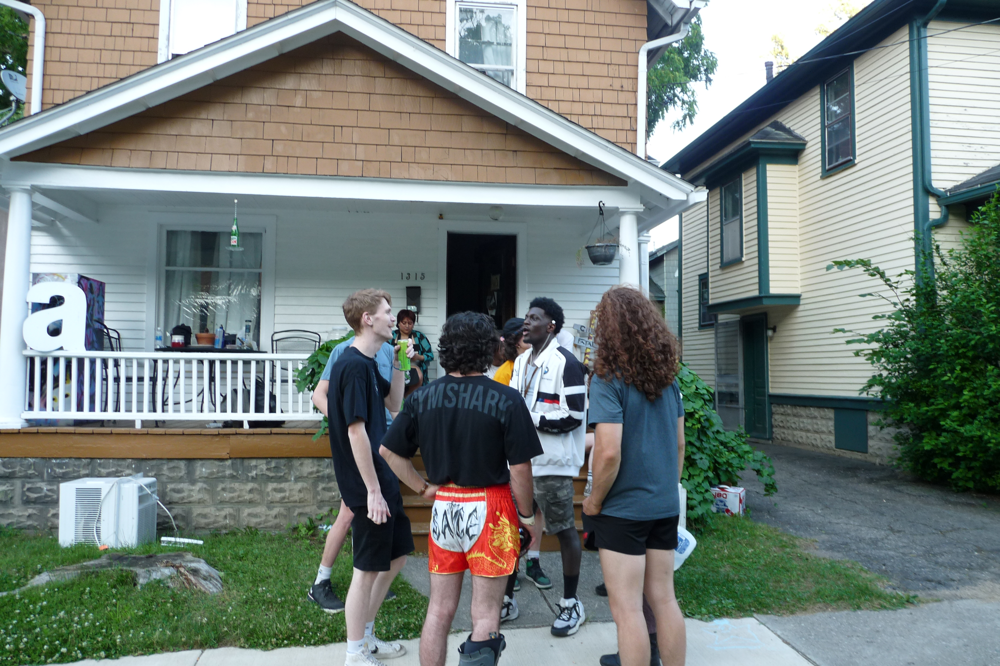
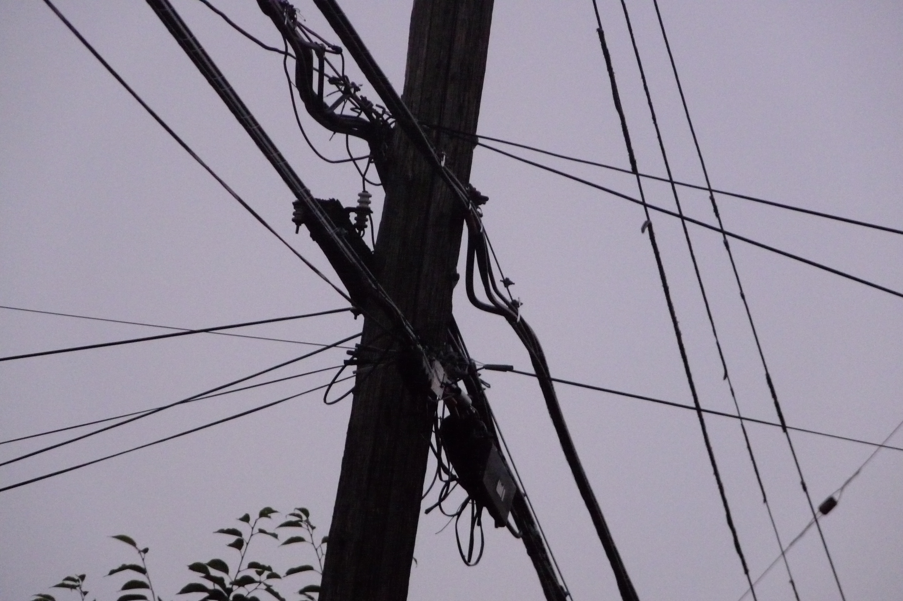
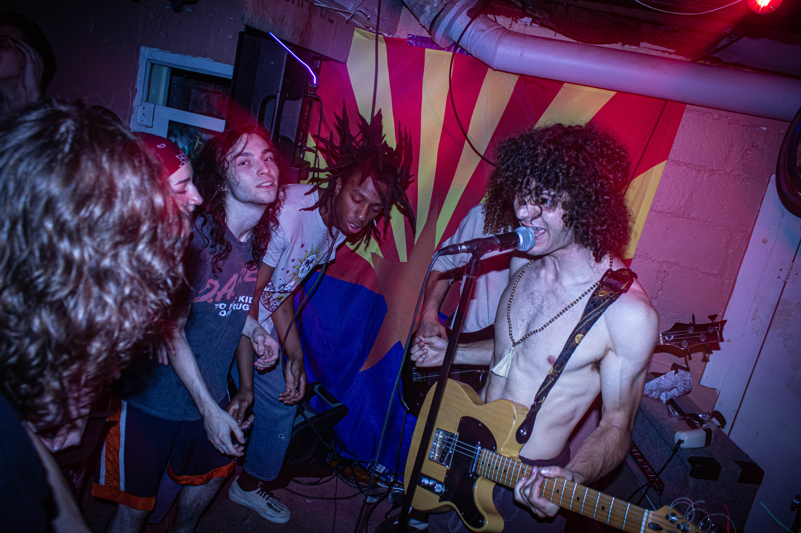
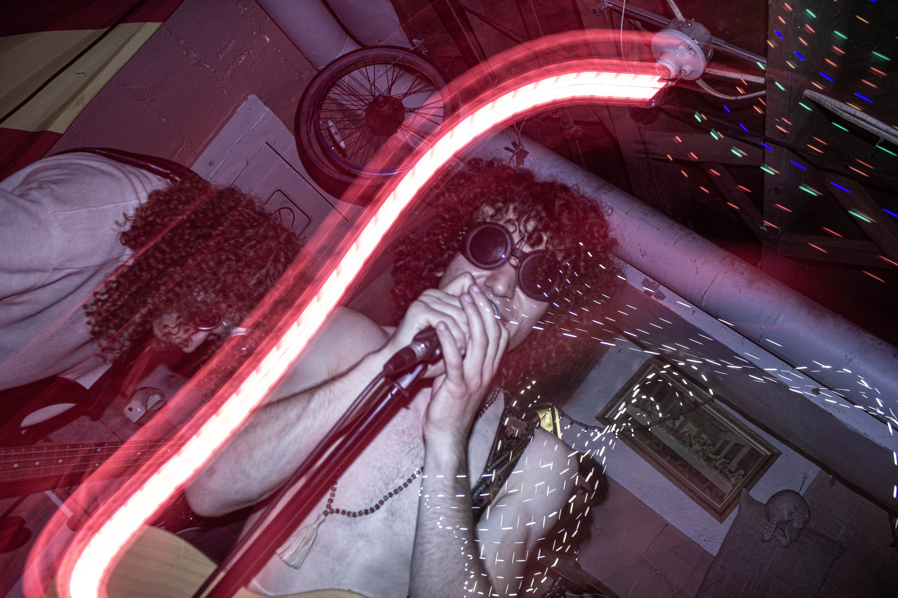
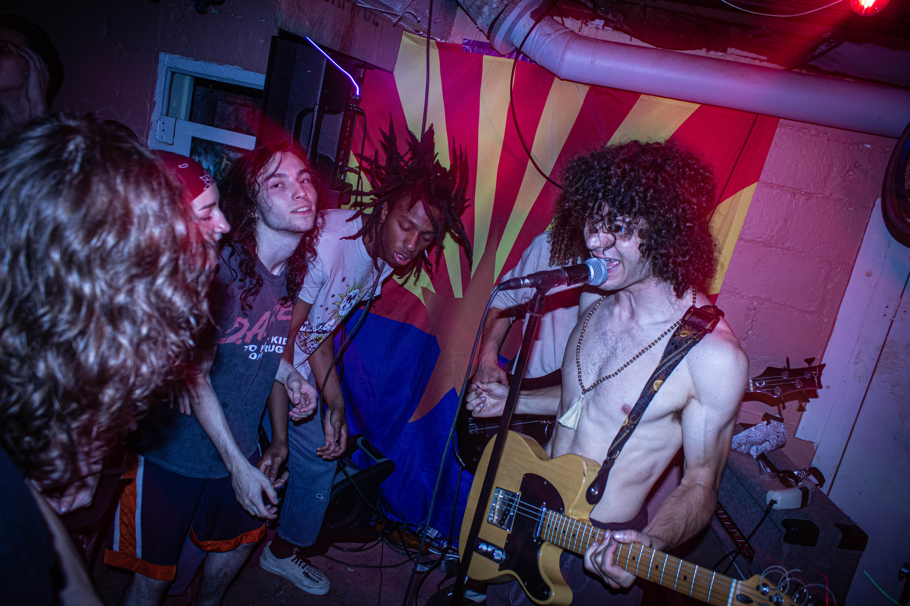
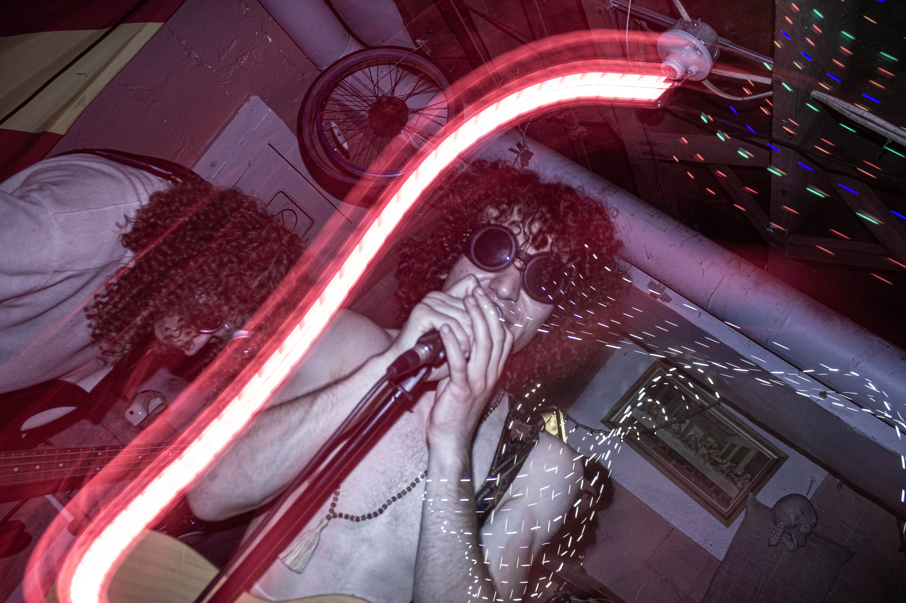

After Kalamazoo I think we lost all sense of past present and future. We played shows. We slept outside. We drove West.
Jack, somewhere.
With enough spiritual experiences and esctatic memories to last a lifetime,
but still hungry for more, we turned back East. Brain Graffiti and the Mirror folks set up this skatepark show in Champaign, IL
which is where we met Megan, our saxophonist. She and Keaton hopped in the van and we gained two members to the crew. Pics by Austin Corley.

Back home, James Wise made this recap collage and began promoting the barn show.

More days passed. I don't remember many specifics, but I remember when Henry said, "I think we found ourselves." I couldn't agree more.
Finally we made it back to the barn. I tore up my mask and it meant something. You know how nothing's perfect in this world except in love letters and skewed retrospection?
This night changed my mind. It was flawless, beautiful, vibrant.
The next day we hiked Pinnacle mountain and I never cried harder. When I closed my eyes I swear I saw the end credits roll.
A few days later we played at South Whitney Pizza, and Will King captured the show on his camcorder here:
Henry captured our adventures in the following notes:
June 18th (–>Montclair):
Restaurant Depot stop, snacks, seltzer cheese
New Brunswick park jam, made window covers
Uncle Mike’s house and cute dog Theo, ordered pizza + subs,
played ping pong Jenga
Meat locker show, met owner outside–a man of few words
Slept at uncle Mike’s house on the ground, no blanket :(
June 19th (–>Lancaster):
Made big batch of oatmeal, showered
Driving through NJ, almost got hit, “tackle” guy throws plastic
bottle
Drive to Christmas tree farm, setting up camp
Go to Walmart–Little Mutant/Mutator? Show
Awkward Dragonfruit show, not in on the jokes, Cheesing
starts
Play an okay set, owner gives us 24 free beers!
Drinking + cooking over fire, steak fajitas
June 20th (–>Greensburg):
Wake up and do push ups
Did we eat breakfast?
Go to Planet Fitness but Louis, Gavin, Noah and I go to Harbor
Freight and Job Lot
Super hot, drink sun-brewed coffee
Run and smoke weed, then sketchy Twin Lakes dip (it was totally
fine, maybe a bit warm)
Go to Greensburg’s Green Beacon Gallery and meet Phil, super
welcoming with bed set up
Play good show, watch experimental noise theater band, Domino’s
Pizza
Late night rice, beans, and chicken with Louis, Matteo, and Phil
in the parking lot
June 21st (–>Detroit):
Cook steak and duck egg breakfast with too much cheese!
Planet Fitness
Detroit drive, get to venue and make shitty masks, can’t find
pedals
Play heavy set and drink a bunch of PBRs, straight edge band
(lol)
Go to hotel and check in with fake IDs, police says bring all
your shit inside
Make PBJs, and have a bean party, rip cart and drink
whiskey
June 22nd (–>Kalamazoo):


Next morning graffiti behind wall art and trashed room, avocado
in smoke detector and hanging clothes iron
Quick picture frame switch after James drops the frame and it
shatters (hole behind the other one!)
Clean up and go to Planet Fitness
Korean Diner in Ann Arbor (thanks Rosemarie!)
Walk around park in Kalamazoo then go to Goodwill and buy
landline phone and water bottle
Go to magic store and talk to Antony Gerard who fooled Penn &
Teller
Draw on masks and hangout on porch of Laboratory
Play heavy show, Sauce goes crazy
Shattered distillate jar in my bag and cut myself :(
We sell a lot of shirts and the old punk rocker gives $
Pack up and set up grill on porch
Hangout and make pasta
Walk through the rain, sleep in the basement of Grayson’s
house
June 23rd (Kalamazoo)
Wake up, listen to Yellowman during morning workout
Planet Fitness parking lot oats and find $14 Hamm’s
Go on hike and climb up the cell tower
Making microphone and Lentils & Naan
Crazy show, my bass is fucked, talking with Jeffrey on the
porch
Matteo eats a whole jar of almond butter
June 24th (–>Starved Rock)
Go to sleep
Poor Richard’s Diner
Swim in lake Michigan, meet sword dancers who’ve seen us on
instagram
Starved Rock Black Bean burgers (we were really hungry)
June 25th (–> Aledo, IL)
Morning rain
Planet fitness (uneventful), find soldering gun at thrift
store
Go to Davenport, IA guitar center for pots
Meet Sean Something from Nothing
Go to gas station to poop and pick up some Ole
Milwaukees
Back to Sean’s, set up, weird vibe, circuit breaks, acoustic open
mic, Sean’s set
Bar in the middle of corn fields
Go to airbnb and make stir fry, fix bass, free cinnamon
jam
June 26th (–> Mark Twain Lake)
Late wakeup
Go To Mark Twain lake, awesome roundabout site, set up
drums
Eat mushrooms, play in lake, cliff jump, climb, watch
fish
Serene pink beach with Matteo and James
Cook food over fire, my feet hurt
Sleep in hammock on shore
June 27th (Kansas City)
Wake up and swim with Matteo
Play music for cows
Kansas City house Arbnb
Red meat situation, 53 lbs?
Goofball Skates show, give away some zines
Super hungry. Make breakfast for dinner, bacon and homefries, get
super high and watch “Up” before Noah hijacks the TV
June 28th (–>Columbia MO)
Wake up in a rush with wet clothes in dryer
Go to planet fitness and other thrift store, buy a manny
pack
Go to Columbia, MO library
Finger Lakes state park
Really hungry again, make breakfast for dinner, try to dry
clothes on line
Night hike, the camp neighbor domestic dispute in the
rain
June 29th (–>St. Louis)
Wake up next morning, make oats probably
Pack up and go to planet fitness?
Get xylophone off marketplace
Go to airbnb where family lives, drink coffee and go to Elvis
Room
Annoying load in through back, I’m super sick, got bored and
bought bread for sandwiches
Alright show, really cool rappers, Emily drives from Arkansas,
diner after show, go home and watch fight on the way
Come back and fall asleep to Spy Next Door
June 30th (–>Urbana)
Wake up and leave late (again)dry clothes this time?
Jack breaks Matteo’s nose, Emily leaves
Drive to Urbana skatepark
Pick up the Hamm’s refreshing beer
Awesome park show, gunshots, we pack up quick
American Football house, Rick the Chef
Cooking at Mirror House kitchen, delish pita and falafel, garlic
rice, eggs, candied walnuts…
Get high & go to sleep
July 1st (–>Versailles State Park)
Wake up and hang out with Keaton, no Bananas in Urbana
Shower and get ready, Megan & Keaton join us
Go to urgent care for Matteo’s nose
Drive to Indiana, go to store for food and booze
Make delicious lentils @ Versailles state park
Feed and drug the raccoons, late night spigot search
July 2nd (–>Cincinnati)
Wake up, try to swim but the water’s dirty, no other
place
Drive to Gobbler’s Knob, insane Noah Jack jam, carve wood, go on
hike and find old cars in the woods
Cincinnati pfit
Go to Northside Tavern, Matteo and I get meat
Dedworm set, play with Megan and Noah, Matteo on Xylo, gets
recorded
Go back to camp and make chili
Celebrate Noah’s birthday
July 3rd (–> Columbus)
Wake up, Keaton leaves
Wash dishes at car wash
Go to Pfit, meet motorcycle guy, go to Costco
Drive to Columbus and unload in pouring rain at Half
Baked
Okay set, controversy about set order, bar owner is a
hardass
Stops raining, go to teepee campsite
Make failed onion pancakes and chickpea spread over wet wood
fire
July 4th (–> West Virginia)
Poor sleep in Teepee, see bison
Go to Planet Fitness and Aldi for 4th food
Drive to west Virginia campsite outside Morgantown, “Cooper’s
Rock”
4th of July burgers and wine
Poured rain during night in hammock
July 5th (–>Baltimore)
Wake up and go on Rock City hike
Breakfast burgers
Planet Fitness, antique store pee, long wait for crabs, eat greek
food instead
Go to Undercroft Baltimore, HOT day, insane chafing
Played great show, HUGE dragonfly, play upright bass, Matteo
leave cymbal
Drive to MD hipcamp, met 3 dogs (cute)
Make sausages, play/feed dogs, woken up by their
wrestling
July 6th (–>Philadelphia)
Wake up, swim in creek with water gun fight, pancake and sausage
breakfast
Wash dishes and pack up
Go to Philly Airbnb, go to store, prep naan
Pick up Jake at train station, go to Haus
Not coked up anymore? Load in all our gear
Play incredible set with no audience
Hang out with Jake and smoke, pack up, go back to Airbnb
Chef up with Matteo, go on walk with Jake and get lost
Go to sleep
July 7th (–>The Barn)
Wake up, get Wawa
Lexi leaves phone at Dunkin’
Get booze and pizza, got to Barn and hang out, meet
people


 


